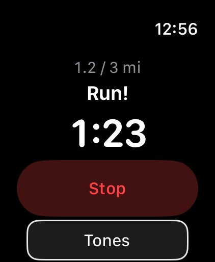
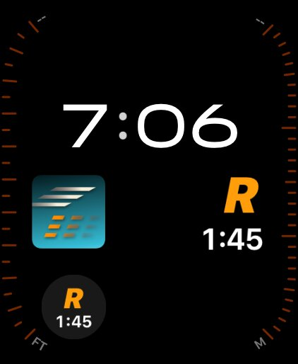
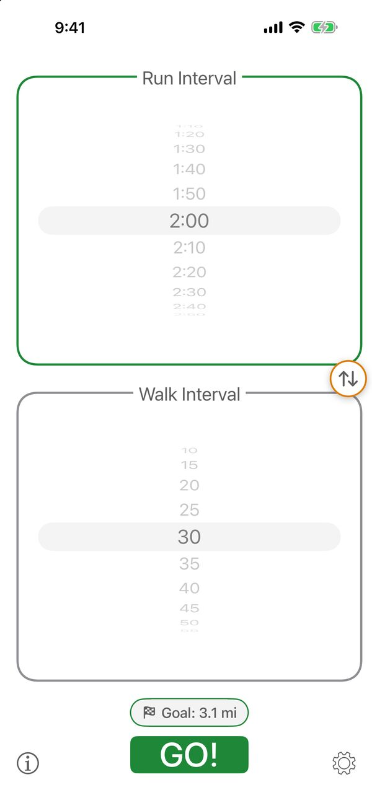
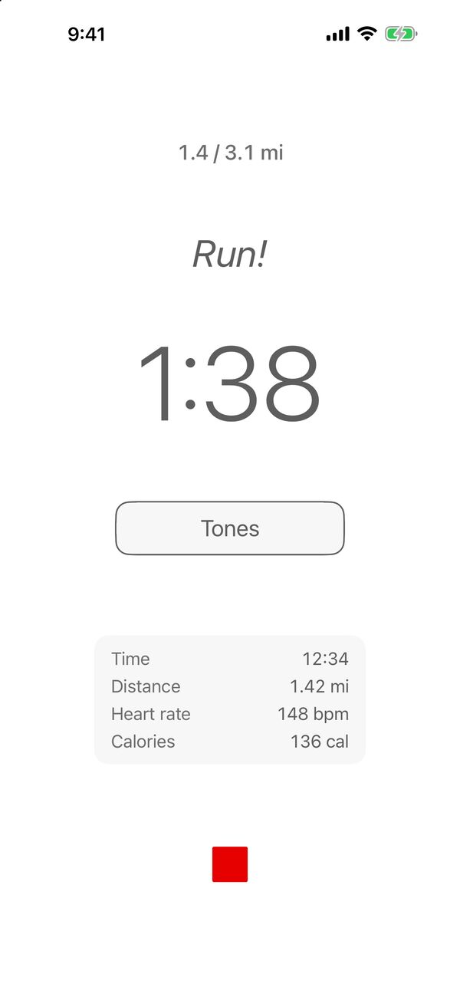
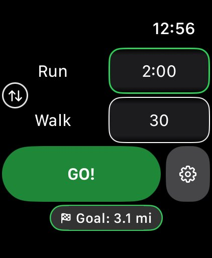

Leave the phone at home.
The Apple Watch app now works by itself. Start from your wrist and go.
- Runs without the phone. Set intervals, a goal and the alert type right on the watch.
- On your watch face. The complication shows R or W and the time left in the interval.
- A tap at each change. With workout recording on, you feel the switch from run to walk on your wrist.





Two wheels and a GO! button.
Pick a run time and a walk time. Add a time or distance goal if you want one. Tap the swap button to walk first.
Still simple. It just learned a few things.
Goals
Pick a time or a distance. You hear “Halfway there” and then “You've met your goal.” The intervals keep going if you do.
Run first or walk first
Your call. One tap swaps them.
Siri
“Start run in RunIntervals.” “How's my run in RunIntervals?” Works in Shortcuts too.
A summary when you stop
Time, distance, heart rate and calories, with a small amount of well-earned encouragement.
Apple Health, if you want it
Turn on workout recording and each run is saved as a workout. Leave it off and nothing is recorded anywhere.
Three kinds of alert
A normal voice, a silly voice, or plain tones.
Plays well with others
Alerts lower your music or pause your podcast just long enough to be heard, then hand it back.
No tracking, no data collected
Workouts you choose to record go to Apple Health on your own devices and nowhere else. Privacy policy
Free
No account, no subscription. Requires iOS 26 and watchOS 26.